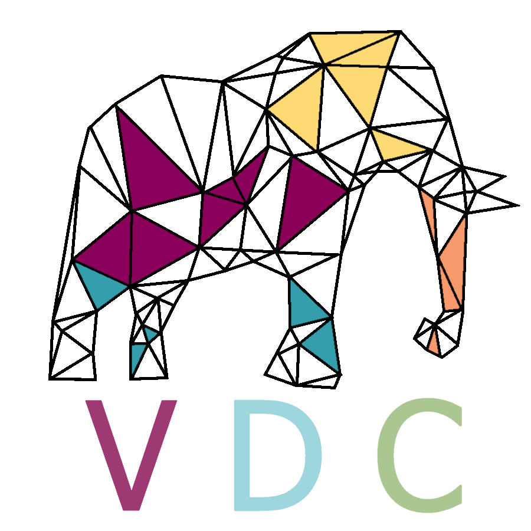
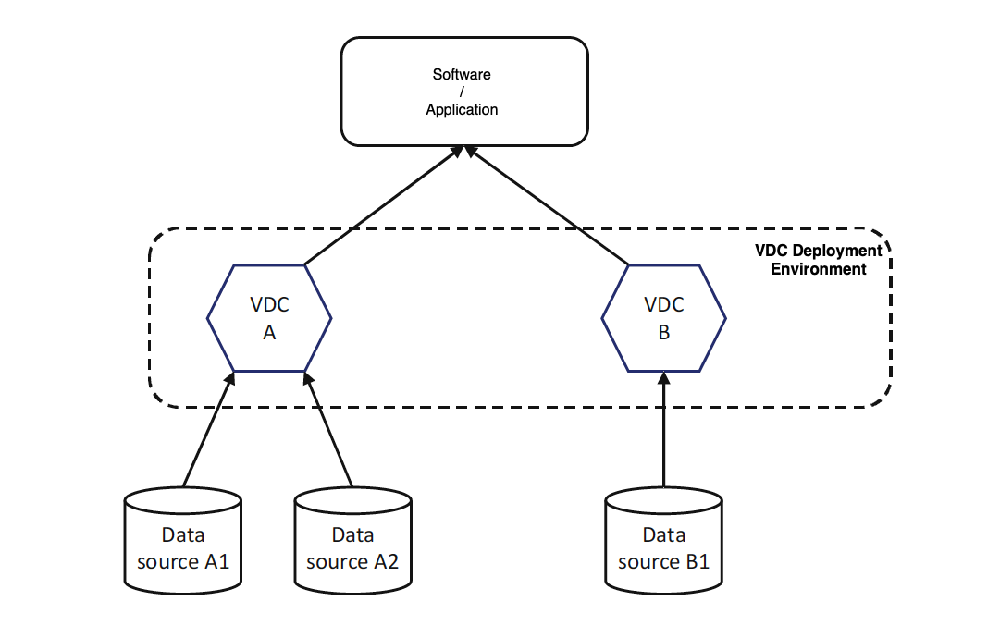
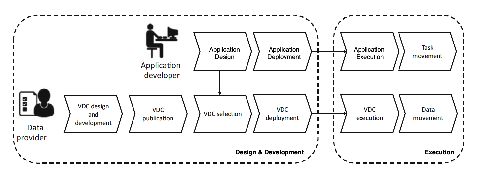
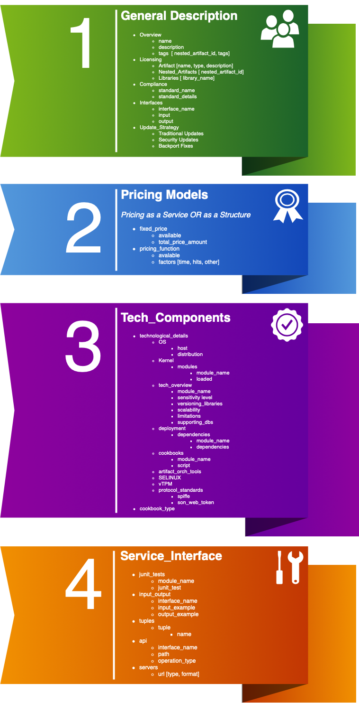
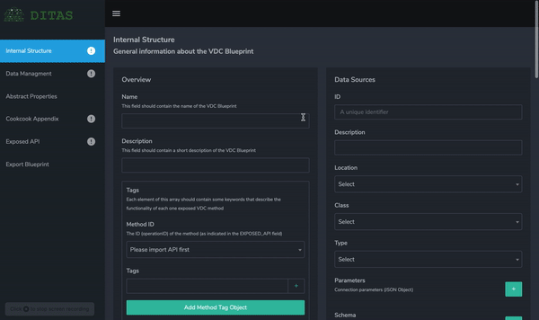

Welcome to Virtual Data Container's Official Page
Here you will have all the access to the VDC's code, the Blueprint-Artifact Editor's code, as well as their latest releases.

What is a VDC?
The Virtual Data Container (shortly refered to as "VDC") represents a new way of presenting the data. As the modern world constantly evolves, data are becoming a really valuable asset. During the past decade, the total amount of data generated by the world has skyrocketed. It seems only reasonable to move on to new ways of handling data, but also presenting / selling them as products. What if we were able to choose among various services, applications that suit our needs, simply presented and easily organised inside a virtual container? What if, choosing the best apps and services was just as simple as choosing a product from the Super Market? The Virtual Data Container aims to become exactly that. A new way of presenting data, services and applications, as mentioned earlier.
In a few words, a Virtual Data Container could be a set of data, a web service, an operating system, an application etc., organised in a virtual container image and presented to the potential buyers / users. This is the future, transforming existing operations and datasets to services and making them easily accesible to the end users. A VDC is versatile, easily upgradable, and can be tailored to a specific customers' needs. However, in case a VDC is structured as a concrete and preset / prefixed service, potential users can find out if a its good for them or not.
As data can be distributed among resources both on the Cloud and the Edge, Virtual Data Containers (the VDCs) are proposed as a mean for timely and securely offering data also transparently with respect to their location and format.
In more detail, a VDC:
- Provides uniform access to data sources regardless of where they run, i.e., on the edge or on the cloud.
- Embeds a set of data processing techniques able to transform data (e.g., encryption, compression).
- Allows composing these processing techniques in pipelines (inspired by the node-RED programming model) and executing the resulting application.
- Can be easily deployed on resources which can live either on the edge or in the cloud.
Design & Development

The first step of an application life-cycle concerns the work performed by a data administrator (a.k.a. data provider) who, based on the managed data sources,
creates a VDC JSON-Schema (“Artifact” or “Blueprint”) which specifies the characteristics of a VDC in terms of following:
- The exposed data sources.
- The exposed APIs.
- How the data from the data sources needs to be processed in order to make them available through the API.
- The non-functional properties defining the quality of data and service.
- The components cookbook: a script defining the modules composing the container as well as their deployment.
In this GitHub repository, we provide a VDC Schema creator, for the data providers to be able to easily introduce themselves to the VDC “network”. That we will analyse later on.
Following the Service-Oriented Computing principles, the visibility principle requires to publish a description of a service to make it visible to all the
potential users. As a consequence, the data administrator publishes the VDC Artifact. Once published, the developers come into play. As the
information included in a VDC Blueprint-Artifact also concerns functional and non-functional aspects, a developer relies on this information to select the most
suitable VDC according to its purposes. It is worth noticing that, based on the nature of his/her needs, the developer could select different VDCs referring to different
purposes. Finally, the developer designs and develops the software and deploys it on the available resources which can be located on the edge or in the cloud. The initial
deployment is the key element in the approach; as in this phase, it is required to know which are all the possible resources on which the VDC can be executed. A standard Fog environment implies that DaaS can be provided using resources belonging to both the provider and the consumer. Without loss of generality, we can assume that the provider resources are always in the cloud, while the consumer resources are always on the edge. In this way, a VDC living in the cloud has more capacity and it probably lives close to the data source to which it is connected. Conversely, a VDC living on the edge has the advantage of living closer to the user, thus reducing latency when providing the requested
data. Deciding where to deploy the VDC depends on the resources required by the VDC (e.g., it might happen that the amount of resources to process the data before
making them available to the user cannot be provided at the edge), the network characteristics (e.g., the connection at the consumer side can support a high-rate
transmission), and security (e.g., not all the data can be moved to the consumer side, thus even the processing cannot be placed at the edge).
Execution

The VDC Deployment Environment can be built on top of a Kubernetes cluster, or a Docker / Docker Swarm cluster. In fact, given a VDC Blueprint / Artifact, based on the cookbook section, a docker container is generated and deployed. Furthermore, given a VDC Blueprint-Artifact, many application developers can select it for their own application. As a consequence, several applications can operate with different VDCs. Moreover, as the same VDC Blueprint can be adopted in different applications, each of these applications includes instances generated from the VDC Artifact; thus, they are connected to the same data sources. Thanks to the abstraction layer provided by the VDC, applications deployed through the platform can access the required data regardless of their nature and location (cloud or edge). Due to the distributed nature of the applications to be managed, to the execution environment being distributed by definition and because of the different computational power offered by the devices, it might happen that only a subset of the modules can be installed on a specific edge device. For this reason, at deployment time, not only the data-intensive application is distributed over the cloud and edge federations, but also the execution environment is properly deployed and configured to support the data and computation movement. The decision on where to locate both the application and the data required by the application itself is taken at design time, but can be updated during the application execution, according to the detected state of the execution environment.
How can I know which VDC best suits my needs?
For a VDC's operation to be fully understandable by potential users / buyers, each and every one will have a unique JSON formatted document, named "Blueprint" or "Artifact". This Blueprint is divided into four main sections (one can extend or reduce those sections). Each section refers to a specific group of people, for each group to better understand the VDC's structure and way of operation. The first section is intended to provide general information to one of the company’s decision strategy makers, usually the one responsible for it’s vision. The second one should provide all the information needed for a company’s executive who has primary responsibility for managing it’s finances and all the issues of financial nature. The third section should refer to the company’s executive whose main, primary focus is on scientific and technological issues within the organization. Last but not least, the fourth section should be written with the company’s developers in mind. They shall have access to all the vital information for their knowledge upon the VDC to be thorough.
The VDC Artifact-Blueprint
As we already mentioned, the original VDC Blueprint is divided into four main sections. Let us see the sections with more detail:
First Artifact Section
Type of attributes that could be included in the JSON Blueprint are:
- Unique identifier, which differentiates the product
- General details, a plain text that includes details about the functionality, description and logic of the VDC. Furthermore, the team behind the VDC should provide general information and a description regarding the VDC's services and the data. For example, they could give an answer for each of the following questions: What data is involved in the VDC? What is the value of the data? What are the services that access the data?
- OS details, the VDC’s seller should state both the OS’s host and distribution of it.
- Licencing, again a plain text field which shall briefly explain details about the VDC’s licencing. Those details may vary depending the VDCs’ included. This field shall contain only the most important pieces of information.
- Compliance, once again a string value, summarising the cases where the VDC complies and / or conforms to a policy or a law.
- Update strategy, a plain text that determines the OS’s upgrade plan for traditional updates, security updates and backports.
The first section of the Artifact records general information related to the VDC composition system, like a business description of it, legislative compliances, licences, the category and an abstract reference to its inputs and outputs. It should properly introduce the reader and potential buyer to the VDC (the service composed software), analysing all the basic and key elements. This section should not detail specialized VDCs’ sectors, for such a description will be cited in later sections of the Artifact. The first section’s main aim is to provide all the information needed for the decision maker (like a company’s senior officer) to consider acquiring the VDC.
Second Artifact Section
Type of attributes that could be included in the JSON Schema from this section are the following two:
- Pricing Model, a string (plain text) field where the pricing model chosen by buyer will be specified. There are two such models (Pricing as a Service / Pricing as a Structure), which means that this field is expected to include one of the aforementioned specifications.
- Total Price Amount, an integer field where the total amount needed for the buyer to acquire the VDC will be cited. The price shall primarily be a result of the pricing model’s choice. That said, the “Pricing Model” and “Total Price Amount” fields should be dependent on each other.
The second section of the Artifact deals with the pricing of the VDC as a whole and all the financial matters regarding it. Mentioned many times earlier, the VDC is composed of a series of different microservices, combined under one (or more) stable API. Such an architecture makes it mandatory for a specific pricing model to be constructed. Although one model could be enough to explain the pricing dependencies in a company’s executive, it seems a better idea to implement two kinds of pricing schemes in order to give a better view for the total cost needed to acquire the VDC.
Third Artifact Section
There are few attributes that could be included in the JSON Blueprint from this section:
- Technical Overview, an array which shall contain string values of each service inside the VDC. Those values are the Versioning / libraries, the Scalability, the Limitations and the Supporting Databases of each service-module (again, inside the VDC). In a few words, Technical Overview will be an array including modules and each module shall include the aforementioned values. Versioning and libraries field will be a string one, citing the VDC’s versioning and supporting libraries in a few words. The Scalability field shall also be a plain text, which will contain few details regarding that VDC’s scalability options. Limitations field will be, once more, a string one, including the basic and most important limitations of the VDC. Last but not least, the Supporting Databases field shall indicate which DBs are supported by the VDC.
- Deployment Sequence, an array which will specify the details about the VDC’s deployment. The array shall contain two string values, the Dependencies between services inside the VDC and the Deployment Sequence itself. The first value, Dependencies between services, will be a plain text field briefly citing all the dependencies between the VDC’s modules. The second value, Deployment Sequence, will also be a string field, this time analysing the VDC’s deployment sequence.
- Cookbooks, once more an array value containing two values, Artifacts and Cookbook Details. The Artifacts field shall be a string value, specifying any possible artifacts the VDC has, except the cookbooks found in it’s microservices. The Cookbook Details field shall be an array, including all the cookbooks used by each VDCs’s module (service). Each module will be a different array value, citing it’s cookbooks in plain text format.
- Artifact Orchestration Tools, an array field which shall briefly analyse the Deployment and Orchestration tools used by the VDC. One such basic tool is the API used from it’s microservices.
The third Artifact section includes an abstract technical overview regarding the versioning, the libraries, the scalability, the limitations and the supporting databases for each service inside the VDC. Furthermore, it analyzes the VDC's full deployment sequence, such as the dependencies between microservices and, of course, the sequence itself. In addition, this section will list the cookbooks for each service inside the VDC. Last but not least, it will analyse all the Artifact orchestrating tools with a list of deployment and orchestration ones. This way, a potential buyer would get the “full picture” of the VDC’s technical requirements.
Fourth Artifact Section
Type of attributes that could be included to the Artifact from this fourth and final section are the following:
- Junit Tests, a string (plain text) field where the tests being done to find any faults at the VDC’s behaviour and functionality product will be specified in short.
- Input / Output, a string value which shall cite the VDC’s input and output for the developers to know their exact types.
- Tuples, a plain text field including all the information needed for the developers to understand which Tuples are contained in each cookbook.
- API, once more a string value reporting the VDC’s API to the developers.
The fourth Artifact section refers to the developers of a company. The ones responsible for the proper function of all the software inside a business corporation are the developers. They make sure that everything works according to the plan and ensure the stability for every kind of product is running on a computer. This means that the team will have to be in a standby mode every single hour of the day, for the company’s software to always work properly. In the case of the VDC, the developers team will have to deeply understand how it works. This section shall explain all the components of the VDC in order to give the developers a complete overview.
You can see an example of the four sections combined (in pseudo JSON structure) below:

Of course, one can extend or reduce the sections of his/her Blueprint. It is up to the provider to create the proper Blueprint-Artifact. However, the aforementioned four sections are considered as the main ones, since they include a broad variety of information regarding the VDC and its internal structure.
Blueprint-Artifact JSON Schemas
In order to have a better understanding regarding the Blueprint-Artifact JSON Schema as a concept, it seems only appropriate to examine some examples (two in particular). Let us first go through a Blueprint JSON Schema which has been created for the needs of DITAS European Project. Then, we will go through a generic Blueprint-Artifact JSON Schema. These two schemas share many similarities, which can be considered as a positive characteristic of the Blueprint Schemas. The more similar they are, the better for anyone that chooses to learn more about the VDC and its architecture. Now, let us proceed and take a closer look at the two schemas. Both ones can be found under the “jsonSchemas” folder, in the main repository.
VDC Blueprint JSON Schema
*You can find, download & view the schema under the “jsonSchemas” folder in the main repository, named “ditasSchema.json”*
*We also remind you that you can view the json schema (as well as any other json document) here*
The DITAS VDC Blueprint’s standard JSON schema consists of five different sections. These sections are:
- Internal Structure
- Data Management
- Abstract Properties
- Cookbook Appendix
- Exposed API
Both five sections are considered as required fields/objects. Of course, each section stands as a different json object.
Internal Structure: This is the first section, citing general information about the VDC Blueprint. It is a json object and consists of eight properties:
- Overview, a json object containing a string, which should cite a short description of the VDC Blueprint
- Data Sources, a json array consisting of different items (data sources). Each item will be a json object, including its unique properties such as: description, location, class, type, connection parameters & schema.
- Methods Input, a json object containing the part of the data source that each method needs to be executed. It has one property, called methods, a json array which actually is the list of methods.
- Flow, a json object containing the data flow that implements the VDC. Flow has three properties: Platform (Spark or Node-RED), parameters and the source code.
- DAL Images, a json object containing Docker images that must be deployed in the DAL indexed by DAL name. It will be used to compose the service name and the DNS entry that other images in the cluster can access to. Additional properties include Information about the DAL including its original location (meaning its original IP) and an optional set of images to deploy indexed by the image identifier.
- VDC Images, a json object citing the available VDC images.
- Identity Access Management, a json object access management properties such as jwks URI, Iam endpoint, roles (array) and the provider/s (array). Of those four, two are considered as required (jwks URI and Iam endpoint).
- Testing Output Data, a json array consisting of two kinds of items. These items are method id (that is, the id (operationId) of the method (as indicated in the EXPOSED_API.paths field) and zip data (that is, the URI to the zip testing output data for each one exposed VDC method). Both are considered as required.
Note that only two of the aforementioned eight properties are considered as “required” to be filled. These are the Overview and Data Sources fields/properties.
Data Management: This is the second section. It is a json array and actually consists of different methods. Its properties are:
- Method ID, a string field citing the ID (operationId) of the method (as indicated in the EXPOSED_API.paths field).
- Attributes, a json object which actually consists of goal trees. These are data utility (json array of different metric definitions. Each definition has an id, a name, a type and possible additional properties), security and privacy.
Note that both properties are considered as “required” to be filled.
Abstract Properties: This is the third section. Any abstract properties of the VDC are included here. This section does not (intentionally) have a specific structure, since any property (of unknown structure beforehand) can be cited.
Cookbook Appendix: This is the fourth section. It mirrors the Cookbook Appendix section in the VDC Blueprint and, as a json object, it consists of three properties:
- Identity Access Management, a json object containing two properties, validation keys (array of objects) and mapping (array of two kinds of specified objects, but only one kind can be included)
- Deployment, a json object containing information of a deployment that may compromise several clusters. It has five properties. These are ID, infrastructures, name, status and any possible extra properties for resources, infrastructures or deployments. Only the ID is considered as required.
- Resources, a json object citing a set of infrastructures that need to be instantiated or configurated to form clusters. Its properties are the name, the infrastructures (list) and the description. From the three, the name and the infrastructures are considered as required.
Exposed API: This is the fifth and final section of the standard DITAS Blueprint JSON Schema. It is a json object. We could specify it as the CAF API, since it is the CAF RESTful API of the VDC, written according to the version (3.0.2) of the OpenAPI Specification (OAS), but also adapted to DITAS requirements. It consists of one property and two definitions:
The property:
- Paths, a json object containing POST and GET (again, json) objects.
The definitions:
- Method, a json object. It is an exposed VDC Method and it Corresponds to the Operation Object defined in the OpenAPI Specification (OAS) version 3.0.2. It has five properties, which are summary, operationID, responses, x-data sources (array of data sources) and x-iam roles. Of those five, only the x-iam roles property is not considered as required to be filled.
- Content, a json object containing pattern properties of the json schema.
Generic Blueprint-Artifact JSON Schema
*You can find, download & view the schema under the “jsonSchemas” folder in the main repository, named “genericSchema.json”*
*Once again, we remind you that you can view the json schema (as well as any other json document) here*
This is a generic approach to the VDC Artefact-Blueprint JSON Schema idea. The following are a more json-oriented view of the section “The VDC Artifact-Blueprint” above, since this section is based on the generic VDC Blueprint. The schema consists four different sections. These sections are:
- General Description
- Pricing Models
- Tech Components
- Service Interface
Both four sections are considered as required fields/objects. Same as before, each section stands as a different json object.
General Description: This is the first section of the VDC Artifact-Blueprint JSON Schema. It is a json object and provides General information to one of the Company's Decision Strategy Makers, usually the one responsible for its vision. It consists of five properties. These are:
- Overview, a json object containing of three properties: Name (string field citing the name of the Artifact-Blueprint), description (string field that contains a short description of the Artifact) and tags (a json array consisting of elements - each element should contain some keywords that describe the functionality of every nested Artifact). All three properties are considered as required to be filled.
- Licensing, a json object that includes Information about the licensing of the service. It consists of three properties, such as libraries (json array including all the libraries used), artifact (json object containing the name, the type and a short description of another artifact that is cited inside our main one) and nested artifacts (json array including short descriptions of any possible artifacts nested - not just cited - inside our main one).
- Compliance, a json array containing all possible cases where the product (VDC) complies and conforms to a policy or law. These cases are including inside Compliance as items (json objects), consisting of their name and (possibly) a short description of theirs.
- Interfaces, a json array that includes detailed information regarding the product’s Input and Output data. Each item in this list shall be a json object, containing an interface name, its input and output properties. All three properties inside each item are required.
- Update Strategy, a json array containing the OS’s upgrade plan for traditional updates, security updates and backports. Each item of the list shall include three properties: Traditional updates, Security updates and Backport fixes. Only the Security updates field/property is considered as required.
Note that all five aforementioned properties are considered as “required” to be filled.
Pricing Models: This is the second section. Similar to all other main sections, its a json object and it describes the pricing model specified, aiming the company’s executive who has primary responsibility for managing it’s finances and all the issues of financial nature. The two main pricing model scenarios (structured in the schema) are:
- Pricing as a structure, a json object that includes the pre-defined fixed price of the VDC. Therefore, it contains one property named ‘fixed price’.
- Pricing as a service, a json object containing information about the pricing of all the individual components inside the VDC. It contains two properties: Fixed price, where the total amount is stated, and pricing function, which includes several pricing factors based on the individual components. Pricing function’s property will be a json array of these factors (some factors could be time, number of hits, or something else).
The Pricing Models section must contain any of the two models above.
Tech Components: This is the third Schema section. As a json object, it refers to the company’s executive whose main/primary focus is on scientific and technological issues within the organization. It has two properties, which are:
- Technological details, one of the most important properties of the Schema. It is a json object and it includes all the technological information that define the VDC. It consists of nine properties. All nine are required to be filled. These are:
- OS, a json object citing information about the Operating System. Its two attributes are the OS’s host and the distribution.
- Kernel, a json object containing al the kernel modules. It consists of a json array, where all the modules are cited as items.
- Tech Overview, a json object. It contains a json array with all the tech modules of the VDC. Each item (module) inside the array has attributes such as its module name (required), its sensitivity level, its versioning libraries, its scalability, its limitations, as well as its supporting databases.
- Deployment, a json object containing vital information of the deployment phase. Its two properties are dependencies (json array with each item being a module/dependency) and sequence (json array where each item is a specific sequence of modules, identified by their module_names as these have been defined in the tech_overview.modules field). Only the sequence is a required field.
- Cookbooks, a json array consisting of items. Each item includes two properties, the module name (as this has been defined in the tech_overview.modules field) and the script (the URI to the cookbook script file for each module).
- Artifact orchestration tools, a string field which shall contain one of the following: IBM Cloud Orchestrator, Microsoft Azure Cost Management, Morpheus, CloudBolt, Embotics, RightScale, OpenStack, BMC Cloud Lifecycle Management or vRealize Suite.
- Selinux, a json object containing one boolean field that indicates whether SELINUX is enabled in the VDC or not.
- Vtpm, same as above, a json object containing a boolean field that indicates whether vTPM is used in the VDC or not.
- Protocol standards, a json array containing two standards, Spiffe and Json Web Token. Each standard includes a boolean field that indicated whether the particular standard is used in the VDC or not.
- Cookbook type, a string field containing only the value of the cookbook type specified. This field should be choosed among a pre-defined list of cookbook type values.
Service Interface: This is the fourth and final section of the generic VDC Artifact-Blueprint JSON Schema. It is a json object and refers to the company’s developers. It consists of five properties and these are:
- Junit Tests, a json array containing all the junit tests for each module. Each array item must include the module name (as this has been defined in the Cookbook_Appendix.tech_overview.modules field) and the junit test.
- Input/Output, a json array consisting of example data for the input/output of each interface, as these have been defined in the General_Description.Interfaces field. Each array item must cite the interface name, an input example and an output example.
- Tuples, a json array that includes all the information needed for the developers to understand which tuples are contained in each cookbook. Each array item must contain the tuple’s name and information regarding it.
- API, once again, a json array. It includes additional metadata for each interface as these have been defined in the General_Description.Interfaces field. Each array item must include the interface name, the path (a relative path to an individual endpoint, beginning with a slash) and the operation type (could be one of: get, put, post, delete, head, patch).
- Servers, again, a json array. It includes all the servers’ endpoints that are used from the VDC. Each array item consists of one url that leads to a server.
All five aforementioned properties are considered as “required” to be filled.
The VDC Artifact-Blueprint Editor
We will upload a complete VDC Artifact-Blueprint Editor soon. Through the Editor, one will be able to build a correct JSON-formated Artifact for any VDC. An online instruction "booklet" will be available as well.
VDC Editor for DITAS European Project

External Links where VDC is mentioned and/or implemented
European Research Projects:
DITAS European Project / DITAS' offical GitHub Page
Scientific Papers:
Data and Computation Movement in Fog Environments: The DITAS Approach
DITAS: Unleashing the Potential of Fog Computing to Improve Data-Intensive Applications